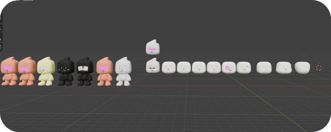

Marzo · 2026
Un Yunipet por piezas
En el primer personalizador, una boca podía ser un dibujo pegado al hocico. La forma del cuerpo cambiaba sobre la misma base y el color del pelaje se elegía por zonas.
Explorar las piezas ↓ Ver la prueba del mes ↓ Ver componentes actuales ↗
Marzo · 2026
Avances por sistema
 Creador de personajesElegir rasgos sobre una misma base
Creador de personajesElegir rasgos sobre una misma base
Qué se hizo
Se diseñó el primer recorrido del creador y se inventariaron sus piezas. El prototipo combinaba cabeza y cuerpo de prueba, una oreja articulada, cejas dibujadas y una boca superpuesta.
Cómo funciona
El hocico ganaba volumen al deformar la base. Los accesorios permitían ensayar otras siluetas y los canales RGB separaban las zonas de color del pelaje. La colección permite comparar esas exploraciones con las formas de cabeza de la biblioteca.
 VestuarioProbar una prenda sobre el cuerpo
VestuarioProbar una prenda sobre el cuerpo
Qué se hizo
El primer boceto de ropa puso una prenda sobre la silueta que se estaba desarrollando para el creador.
Cómo funciona
La superposición permite revisar dónde termina la prenda y qué partes del cuerpo siguen visibles. Es un estudio de proporciones previo a preparar la ropa para animación.
 Mundo y objetosDar escala al cuarto y a sus objetos
Mundo y objetosDar escala al cuarto y a sus objetos
Qué se hizo
Se dibujaron los primeros espacios sobre cuadrícula, se hicieron objetos de prueba en 3D y se exploró el aspecto de la Yunicoin.
Cómo funciona
Los módulos del suelo dan una medida común al personaje, los muebles y el cuarto. La moneda ensaya otro tamaño de lectura: su silueta hexagonal y su cara deben distinguirse al reducirla a un icono.
Colección de marzo
Las formas de la cabeza
Una base, once formas
Compara la curva de las mejillas y el ancho de la mandíbula.
Recorrer el primer personalizador
Secuencia de imágenes
Cómo se armaba el personaje
El boceto, el modelo y los controles muestran tres vistas de la misma idea.